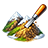
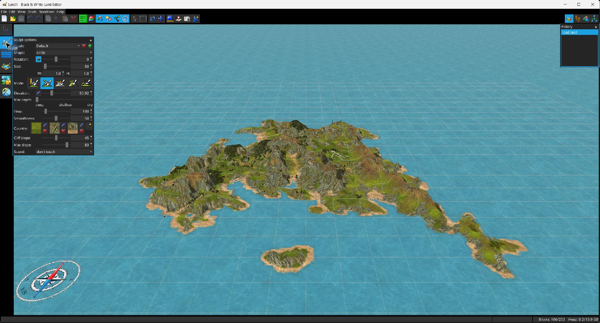

L’outil Sculpter

applique un pinceau réutilisable aux altitudes du terrain et peut également attribuer des régions, des matériaux de littoral/falaise et des sons pendant le modelage.
Les pinceaux peuvent être enregistrés, ajoutés et supprimés. Les formes disponibles sont Cercle et Triangle. La taille définit la dimension principale ; L/H modifient les proportions. L’angle peut suivre la caméra ou utiliser un décalage fixe. Flux contrôle la vitesse d’édition et Douceur contrôle le bord progressif.
| Mode | Comportement | Comportement avec Shift |
|---|---|---|
| Absolu | Déplace les cellules vers l’altitude absolue configurée. | Éloigne les cellules de l’altitude de référence vers les extrêmes disponibles. |
| Relatif | Ajoute le delta d’altitude configuré à la hauteur présente au début du trait. | Soustrait le delta. |
| Aplatir | Utilise l’altitude sous le point de départ du trait comme cible plane. | Ramène les cellules vers les hauteurs enregistrées au début du trait. |
| Lisser | Déplace chaque cellule vers une moyenne pondérée des hauteurs voisines. | Produit l’effet inverse, c’est-à-dire un renforcement local. |
| Terrasse | Quantifie le terrain en paliers d’altitude en utilisant l’altitude configurée comme intervalle. | La cible reste quantifiée ; le modificateur affecte toujours la gestion directionnelle de l’eau/du littoral. |